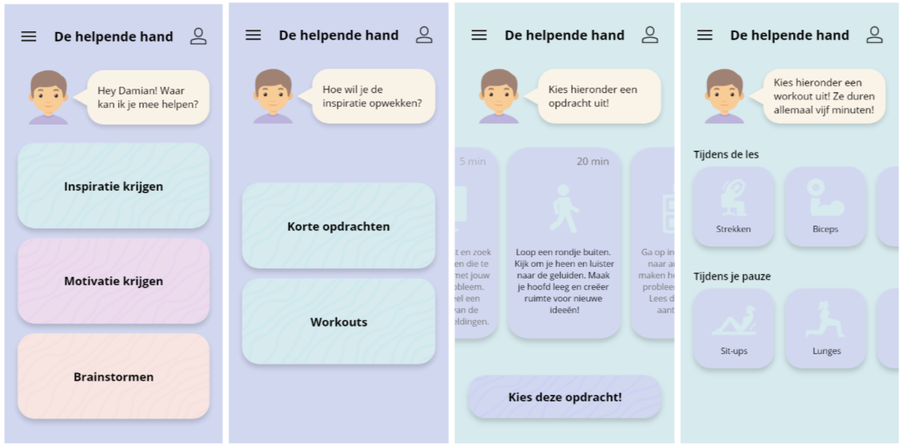

De helpende hand
De opdracht
Voor het vak New Product Development kregen we de opdracht om met een ontwerpteam van drie studenten een gebruikerservaring te analyseren en een concept uit te werken voor een digitaal interactief product.
Mijn invulling
Ons groepje had ervoor gekozen om ons te richten op de Design challenge "Inspiratie opdoen". Om tot ons eindproduct De Helpende Hand te komen, hebben we vier fases doorlopen; verkennen, definiëren, ideegeneratie en conceptualiseren.



 Pip Harsveld
Pip Harsveld 06-33007686
06-33007686 info@pipharsveld.nl
info@pipharsveld.nl